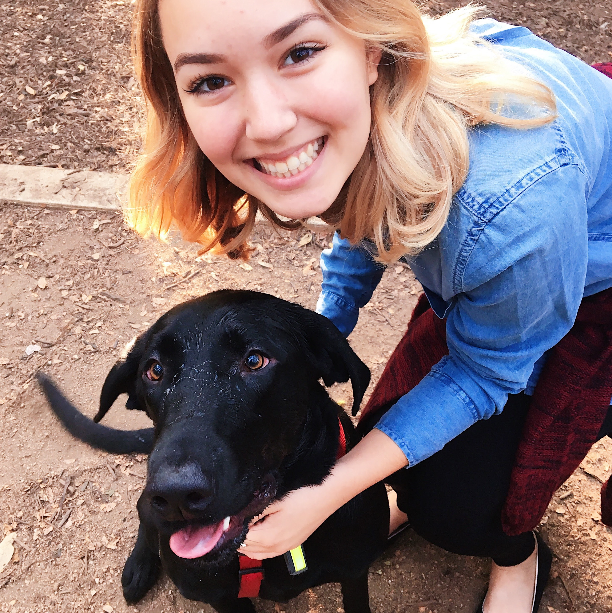

<div class="panel">
    <div class="panel-body">
        <div id="cabdesc" class="well">
            <h2>Wiess Cabinet</h2>
            <p>
                The Wiessmen of Cabinet are a trusted group of individuals.  Elected by their fellow Wiessmen they are tasked with the strenuous duty of maintaining Wiess and ensuring its status as the best college on campus.  Each member of Cabinet has a specialized job and maintains a part of the glory that is Wiess College.  Together, they spend the generous budget and host spectacular events that are the envy of every other college.
                <br>
            </p>
        </div>
        <!-- NEW TABLE-->
        <table width="100%" border="0" cell-padding="30px" cell-spacing="30px" style="border-color: #ddd;" rules=rows>
          <col width="30%" height="100%">
          <col width="30%" height="100%">
          <col width="30%" height="100%">
        <tr>
        <td align="center" valign="top">
          
          <h3>President</h3>
          <h2>Tay Jacobe</h2> <i>Email: taj3@rice.edu</i><br>
          <i>The president calls meetings of Cabinet and presides over Cabinet meetings.  This position has the power to appoint and dismiss the coordinators and chairmen of all committees and is expected to represent Wiess College at College, SA, and University events.</i><br><br>
          <p style="max-width:90%">I am so excited to serve as Wiess' President, and I hope to be able to make impactful, positive change! I have three main priorities for my presidency: (1) Inclusivity, especially of groups that may feel not included by Wiess' current culture or activities, (2) Accountability, accessibility, and availability of student government members, and (3) Thoughtful consideration of our traditions, legislation, and culture and how it could be improved.</p>
        </td>
        <td align="center" valign="top">
          
          <h3>Internal Vice President</h3>
          <h2>Kunal Shah</h2> <p>Email: kunal@rice.edu</p><br>
          <i>The IVP assumes duties of the president upon the absence, resignation, or impeachment. This position also coordinates Summit, Big Bang, Pumpkin Caroling as well as manages the Wiess representative positions.</i><br><br>
          <p style="max-width:90%">As IVP, my focus will be to make Wiess the best home it can be. I plan to focus on Wiess events, culture, and traditions to cultivate a fun, energetic, inclusive and safe community for all Wiessmen. I intend to work with the A-team and other event-planners at Wiess to encourage involvement and initiative, especially from the new students at the beginning of the school year. I want to ensure that any Wiessman with an idea can make their vision a reality for Wiess, by serving as a Wiess rep, coordinating an event, or even launching a new tradition. Finally, I want to start discussions about how we can make meaningful changes at our college and collaborate with Wiessmen to implement them effectively.</p>
        </td>
        <td align="center" valign="top">
          
          <h3>External Vice President</h3>
          <h2>Mike Dai</h2> <p>Email: msd10@rice.edu</p><br>
          <i>The EVP is the chair of the Associates Committee and coordinates the selection and assimilation of Associates.  This position is also involved in coordinating interactions between current Wiessmen and alumni, other colleges, and the surrounding community.</i><br><br>
          <p style="max-width:95%">During my term as EVP, I hope to continue my work on improving the associates program by developing associate visibility within the college. I will accomplish this by planning study breaks, hosting academic and career related events, and searching for active and involved potential associates. I also want to ensure that alumni still feel like they are a part of Wiess college by making alumni events such as the Alumni BBQ as well planned and grand as possible. I want to take advantage of alumni resources to plan large Wiess events, such as Wiess goes to a Dynamos game. Lastly, I want to make sure that the Outreach Committee is regularly going on service trips and actively engaged in the community outside of the hedges.</p>
        </td>
        <tr>
<!-- ROW 2 -->
          <td align="center" valign="top">
            
            <h3>Social Vice President</h3>
            <h2>Liz Kacpura</h2> <i>Email: enk3@rice.edu</i><br>
            <i>The Socials plan and direct the social activities of the college, the major event being NOD.</i><br><br>
            <p style="max-width:90%">Our goals as Socials are: to continue on the traditions that make up a bulk of Wiess social culture, to start the process of destigmatizing NOD, and to bring social events to Wiess that Wiessmen want. We hope that we’re able to represent well the social wants and needs of all Wiessmen, so if you have any ideas, feel free to reach out!</p>
          </td>
          <td align="center" valign="top">
            
            <h3>Social Vice President</h3>
            <h2>Sarah Silberman</h2> <i>Email: ses7@rice.edu</i><br>
            <i>The Socials plan and direct the social activities of the college, the major event being NOD.</i><br><br>
            <p style="max-width:90%">Our goals as Socials are: to continue on the traditions that make up a bulk of Wiess social culture, to start the process of destigmatizing NOD, and to bring social events to Wiess that Wiessmen want. We hope that we’re able to represent well the social wants and needs of all Wiessmen, so if you have any ideas, feel free to reach out!</p>
          </td>
          <td align="center" valign="top">
            
            <h3>Head Treasurer</h3>
            <h2>Ashish Kulkarni</h2> <i>Email: ak64@rice.edu</i><br>
            <i font-size:12px>The treasurers work to manage the finances of the College, prepare a preliminary budget to propose to Cabinet before the beginning of the academic year, and prepare a statement of financial condition of the College at least once a month.</i><br><br>
            <p style="font-size:14px">My goals for the year are primarily focused on efficiency and transparency. There are a lot of budgets this year that have been underused, either due to inaccurate allocation or just wrong budget sizes, so what I want to do is reallocate funds to the places they are actually used so that our money is more effective. Additionally, throughout the year, I want to track how the money is used, and model exactly where we are as compared to predictions based on previous years to determine if we should be spending or saving. Finally, I want to make the budget more transparent by possibly sending out emails towards the middle and end of the year with the budget attached, highlighting the specific budgets that are being underutilized so that Wiessmen know exactly what to do with the money.</p>
          </td>
        <tr>
<!-- ROW 3 -->
          <td align="center" valign="top">
            
            <h3>Apprentice Treasurer</h3>
            <h2>Yunnie Huang</h2> <i>Email: yh49@rice.edu</i><br>
            <i>The apprentice treasurer serves a two-year term, promoted to head treasurer the second term.  The treasurers work to manage the finances of the College, prepare a preliminary budget to propose to Cabinet before the beginning of the academic year, and prepare a statement of financial condition of the College at least once a month.</i><br><br>
            <p style="max-width:90%">Under Ashish's training this year, I will get familiar with Wiess's finance and budgeting by assisting Ashish in handling the P-card, receipts, reimbursements, and financial reports and making sure they are clear and organized. In addition, I will make sure Wiess's money is allocated to activities that would benefit Wiessmen the most.</p>
          </td>
          <td align="center" valign="top">
            
            <h3>Secretary</h3>
            <h2>Johannah Palomo</h2> <i>Email: jep11@rice.edu</i><br>
            <i>The secretary is responsible for recording and publishing college and Cabinet meetings; and oversees the Wiess room reservations and Calendar.</i><br><br>
            <p style="max-width:90%">Hi, Wiess! As your secretary, I hope to keep the Wiess Calendar organized and up to date. I also want to make the room reservation system run smoothly, and to make sure all cabinet meetings are recorded and distributed to the college so Cabinet discussions are easily accessible and transparent. Overall, I mostly hope to make sure every single Wiessman feels they have a voice in their college and that their Cabinet is addressing their concerns.</p>
          </td>
          <td align="center" valign="top">
            
            <h3>Cultural Representatives</h3>
            <h2>Dilo Dube and Ajay Subramanian</h2> <i>Email: bd16@rice.edu</i><br><i>scientist@rice.edu</i>
            <i>Celebrate and support diversity of identity at Wiess through hosting events and providing an open forum for discussion.</i><br><br>
            <p style="max-width:90%">We are excited to continue hosting awesome cultural events as has been done in the past. However, we also plan to take this position one step further so that we not only celebrate different cultures but support them as well! We aim to do this by being an accessible resource to Wiess for matters of diversity and overseeing the new Wiess Diversity Committee. Through these new initiatives we hope to make Wiess a more welcoming and diverse place for all of us!</p>
          </td>
        <tr>
<!-- ROW 4 -->
          <td align="center" valign="top">
            
            <h3>Sophomore Representatives</h3>
            <h2>Jeel Mehta</h2> <i>Email: jjm8@rice.edu</i><br>
            <i>The Sophomore Reps represent the sophomore class.  They are also responsible for coordinating the Beer Bike and Homecoming BBQs.</i><br><br>
            <p style="max-width:90%">We are really excited to be your Sophomore Reps this year! Our primary goal is to foster a greater sense of community amongst the sophomore class. In addition, we hope to help strengthen and expand the big-little program, as well as other New Student Council initiatives. Finally, we hope to promote further interaction between the sophomore class and the other classes at Wiess. </p>
          </td>
          <td align="center" valign="top">
            
            <h3>Sophomore Representatives</h3>
            <h2>David McDonald</h2> <i>Email: drm11@rice.edu</i><br>
            <i>The Sophomore Reps represent the sophomore class.  They are also responsible for coordinating the Beer Bike and Homecoming BBQs.</i><br><br>
            <p style="max-width:90%">We are really excited to be your Sophomore Reps this year! Our primary goal is to foster a greater sense of community amongst the sophomore class. In addition, we hope to help strengthen and expand the big-little program, as well as other New Student Council initiatives. Finally, we hope to promote further interaction between the sophomore class and the other classes at Wiess. </p>
          </td>
          <td align="center" valign="top">
            
            <h3>SA Senator</h3>
            <h2>Simi Rahman</h2> <i>Email: ssr8@rice.edu</i><br>
            <i>The SA Senator represents Wiess at the SA level; they inform Wiessmen about topics under consideration by the Senate, gather feedback from the College, and use this information to vote on and create legislation.</i><br><br>
            <p style="max-width:95%; font-size:14px">Team Family Wiess is an amazing community and I feel that we have so much to offer to the Student Association. My job is to not only to bring the SA issues to you, but also to bring Wiess' ideas to the SA. I plan to keep Wiess informed through Cabinet, surveys, and talking one on one. My issues of interest as a Senator are to keep pushing for financial accessibility in more impactful ways and continue conversations regarding the state of mental health on campus. More importantly, I want to get more Wiessmen involved in projects of their own interest, because student government is a tool for all of us to get the change we want.</p>
          </td>
          <tr>
  <!-- ROW 5 -->
          <td align="center" valign="top">
            
            <h3>Capital Improvements</h3>
            <h2>Kristina Dickman</h2> <i>Email: kdd2@rice.edu</i><br>
            <i>The Capital Improvements rep is responsible for improving the overall ambiance and appearance of Wiess College. The rep solicits and presents to Cabinet capital improvements projects that would benefit Wiess. The rep also works with Housing and Dining in order to secure approval for projects and to allocate the large annual budget provided by Housing and Dining. The rep is a voting member of Cabinet.</i><br><br>
            <p style="max-width:90%">As capital improvement, my primary goal is to renovate Wiess's current spaces and increase the amount of usable public spaces such to foster an inclusive environment. By providing a variety of open communal spaces, students will possess greater opportunity to socialize at Wiess. Specifically, I would like to see the completion of cosy corner, upper commons renovations, and anything else than Wiess expresses as a priority.</p>
          </td>
          <td align="center" valign="top">
            
            <h3>Academic and Career Chair</h3>
            <h2>Serena Tohme</h2> <i>Email: sgt2@rice.edu</i><br>
            <i>Chairs the Wiess Academics and Career Committee made up of the Head Wiess Mentors, Head PAA(s), and Head PCA(s). The committee is responsible for coordinating the academic and professional programming of Wiess College by overseeing and directing the actions of and collaboration between the various academic/professional development groups at Wiess (PAAs, PCAs, Mentors, and STC).</i><br><br>
            <p style="max-width:90%">I plan to improve visibility of and collaboration between the PAAs, PCAs, and Mentors so that they can all work together to advise Wiessmen effectively. I also plan to continue Wiessmen Helping Wiessmen so that I can reach out to the CCD and other organizations for internships of interest to Wiessmen. Finally, I plan on working with the EVP to make Associates and alumni valuable resources for Wiessmen.</p>
          </td>
          <td align="center" valign="top">
            
            <h3>At-Large Rep</h3>
            <h2>Brian Tighe</h2> <i>Email: excellence@rice.edu</i><br>
            <i>The At-large conducts surveys when requested to by cabinet and seeks to represent the voice of Wiessmen at large. The At-large is a voting member of Cabinet but traditionally abstains from all votes. The At-large is also responsible for the State of Wiess (S.O.W) report that serves to keep Wiessmen informed of the on-going issues at the College and across campus. Cannot be a rising sophomore.</i><br><br>
            <p style="max-width:90%">As At-Large Rep, I aim to accurately assess Wiess’ opinion on a variety of issues (serious and non-serious) via the State-of-Wiess survey. I’ll focus on making sure all Wiessmen have a chance to be heard, promoting inclusion throughout the college. Also, I’ll make sure the surveys are entertaining enough for widespread participation.</p>
          </td>
        <tr>
<!-- ROW 4 -->
          <td align="center" valign="top">
            
            <h3>Historian</h3>
            <h2>Anson Tong</h2> <i>Email: ajt9@rice.edu</i><br>
            <i>The Historian is responsible for documenting the Wiess experience by attending and photographing Wiess events and uploading these photos to the Wiess Historian Facebook page.</i><br><br>
            <p style="max-width:90%">My goals as Historian for this year are to consistently document the wonderful events going on at Wiess so that everybody can have a decent quality profile picture, their parents and grandparents can see their college experience and comment on every picture, and so that Wiessmen can reminisce in the future. I hope to have photographic evidence of everyone having fun, and to upload pictures as efficiently as possible for timely Instagram posting!</p>
          </td>
          <td align="center" valign="top">
            
            <h3>Parliamentarian</h3>
            <h2>Jacob Mattia</h2> <i>Email: jrm19@rice.edu</i><br>
            <i>The parliamentarian runs Cabinet meetings and keeps the meetings running smoothly, efficiently, and with as much order as possible. The parliamentarian calls for votes when necessary, records the results, and reports the outcome to Cabinet. Non-voting member of Cabinet.</i><br><br>
            <p style="max-width:90%">I would like to place a special emphasis on having an open dialogue in Cabinet this year. I believe that respectful debate is instrumental in instituting policies that benefit everyone, and we make better decisions when we hear multiple perspectives. I would also like to improve the snaps system to make anonymous complementing even more pervasive in Wiess culture.</p>
          </td>
          <!-- EXAMPLE PROFILE ENTRY
           <td align="center" valign="top">
            
            <h3>Title_3</h3>
            <h2>first_last_name</h2> <i>Email: email_@rice.edu</i><br>
            <i>Description</i><br><br>
            <p>Blurb</p>
          </td> -->
        <tr>
      </table>
    </div>
</div>
